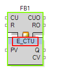

Function blocks can be instantiated in the network editors in several ways:
Using context menu to add an object, which can be FB, Adapter, CAT, POU depending on your project's and the object's availability in the particular context. For instructions relating to FB, refer to the Composite Function Block Editor.
Using the shortcut Ctrl-W as described on page Editor Shortcuts.
Using drag&drop, by selecting the requested function block from the tree within the Solution Explorer and dragging it into the editor.
The type of an instantiated block can be changed by clicking its type name, which is displayed in the center of its graphical representation:

If the new requested block type differs in regard to its inputs and outputs, a redefinition dialog box automatically appears (see Substitute Library Element).
In this case, edit the Type name and delete all characters. This triggers a drop-down selection list from which you can select the desired new Type.